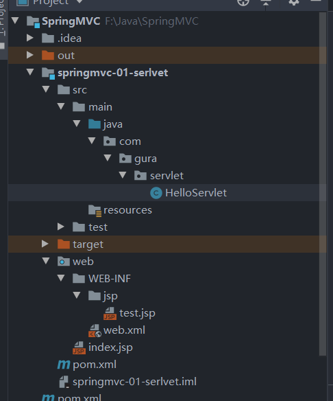

注入了一天真的整的人都头晕眼花的，学一下开发放松一下
SpringMVC-01
我们首先第一步先复习Servlet和tomcat
我们老样子，三层架构，然后导入包什么的
类的组织：

注意请创建MAVEN项目
之后是导包：
1
2
3
4
5
6
7
8
9
10
11
12
13
14
15
16
17
18
19
20
21
22
23
24
25
26
27
28
29
30
31
32
33
34
35
| <dependencies>
<dependency>
<groupId>org.junit.jupiter</groupId>
<artifactId>junit-jupiter-api</artifactId>
<version>5.7.0</version>
<scope>test</scope>
</dependency>
<dependency>
<groupId>org.springframework</groupId>
<artifactId>spring-core</artifactId>
<version>5.2.10.RELEASE</version>
</dependency>
<dependency>
<groupId>javax.servlet.jsp</groupId>
<artifactId>javax.servlet.jsp-api</artifactId>
<version>2.3.1</version>
<scope>provided</scope>
</dependency>
<dependency>
<groupId>javax.servlet</groupId>
<artifactId>javax.servlet-api</artifactId>
<version>3.1.0</version>
<scope>provided</scope>
</dependency>
</dependencies>
|
再之后是写代码：
HelloServlet：
1
2
3
4
5
6
7
8
9
10
11
12
13
14
15
16
17
18
19
20
21
22
23
24
25
26
27
28
29
30
| package com.gura.servlet;
import javax.servlet.ServletException;
import javax.servlet.http.HttpServlet;
import javax.servlet.http.HttpServletRequest;
import javax.servlet.http.HttpServletResponse;
import java.io.IOException;
public class HelloServlet extends HttpServlet {
@Override
protected void doGet(HttpServletRequest req, HttpServletResponse resp) throws ServletException, IOException {
String method =req.getParameter("method");
if (method.equals("add")){
req.getSession().setAttribute("msg","执行了添加方法");
}
if (method.equals("delete")){
req.getSession().setAttribute("msg","执行了delte方法");
}
req.getRequestDispatcher("/WEB-INF/jsp/test.jsp").forward(req,resp);
}
@Override
protected void doPost(HttpServletRequest req, HttpServletResponse resp) throws ServletException, IOException {
doGet(req,resp);
}
}
|
test.jsp:
1
2
3
4
5
6
7
8
9
10
11
12
13
14
15
16
| <%--
Created by IntelliJ IDEA.
User: 75620
Date: 2020/11/19
Time: 20:46
To change this template use File | Settings | File Templates.
--%>
<%@ page contentType="text/html;charset=UTF-8" language="java" %>
<html>
<head>
<title>Title</title>
</head>
<body>
<h1>${msg}</h1>
</body>
</html>
|
web.xml:
1
2
3
4
5
6
7
8
9
10
11
12
13
14
15
16
17
18
19
20
21
22
23
24
| <?xml version="1.0" encoding="UTF-8"?>
<web-app xmlns="http://xmlns.jcp.org/xml/ns/javaee"
xmlns:xsi="http://www.w3.org/2001/XMLSchema-instance"
xsi:schemaLocation="http://xmlns.jcp.org/xml/ns/javaee http://xmlns.jcp.org/xml/ns/javaee/web-app_4_0.xsd"
version="4.0">
<servlet>
<servlet-name>hello</servlet-name>
<servlet-class>com.gura.servlet.HelloServlet</servlet-class>
</servlet>
<servlet-mapping>
<servlet-name>hello</servlet-name>
<url-pattern>/hello</url-pattern>
</servlet-mapping>
<session-config>
<session-timeout>15</session-timeout>
</session-config>
<welcome-file-list>
<welcome-file>index.jsp</welcome-file>
</welcome-file-list>
</web-app>
|
这里实现了一次对接口的处理的转发
测试代码成功